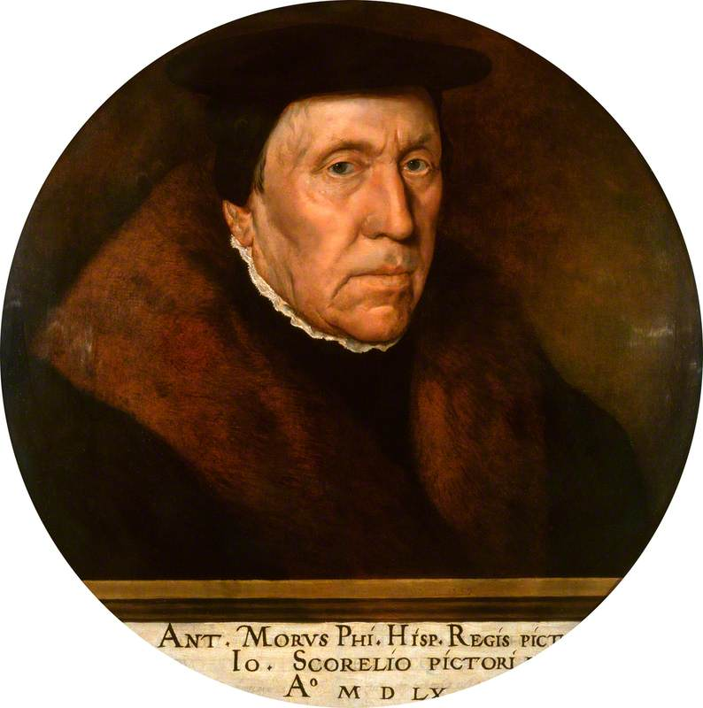

Pintor neerlandés
Jan van Scorel
1495–1562
Hacia 1517 trabajaba en Utrecht con Jan Gossaert 12. En 1519 pasó por Núremberg, donde conoció a Durero, y desde Venecia se embarcó en peregrinación a Tierra Santa 123. En Roma lo protegió Adriano VI, papa nacido en Utrecht, que en 1522 lo nombró conservador de la colección pontificia del Belvedere 13. Tras la muerte del papa en 1523 volvió a Utrecht, donde fue canónigo del capítulo de Santa María 23. Allí introdujo en la pintura holandesa desnudos, arquitecturas clásicas y paisajes imaginarios a la italiana 13. Sus retratos colectivos de peregrinos de Jerusalén están en el origen del retrato de grupo holandés 2. Fue también arquitecto y técnico hidráulico, y maestro de Maarten van Heemskerck y Antonis Mor 2.